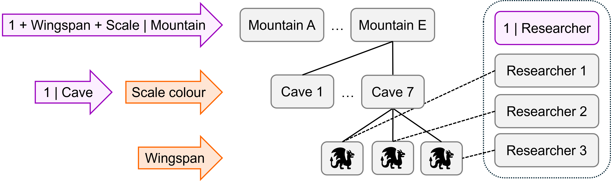
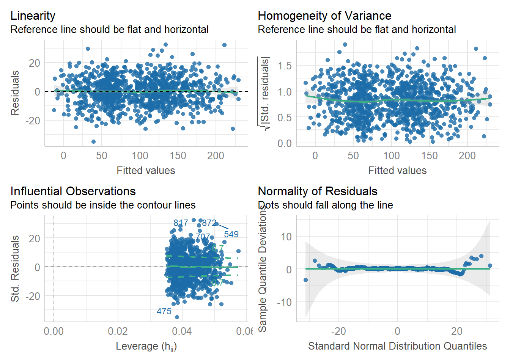
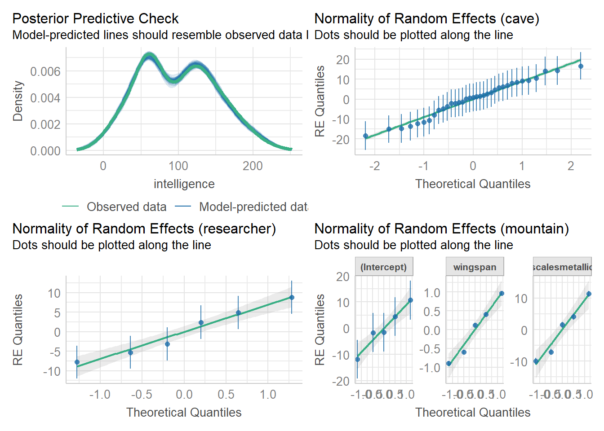
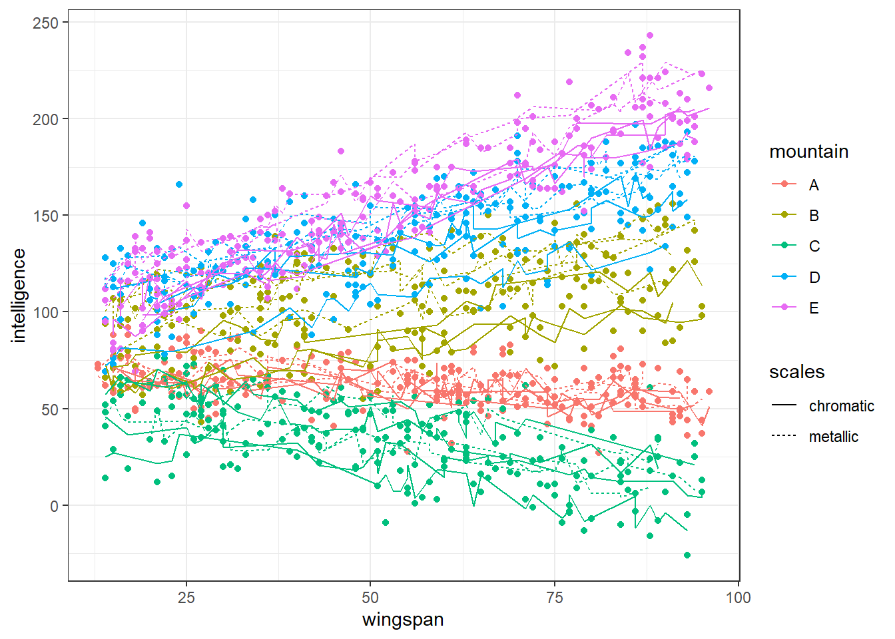
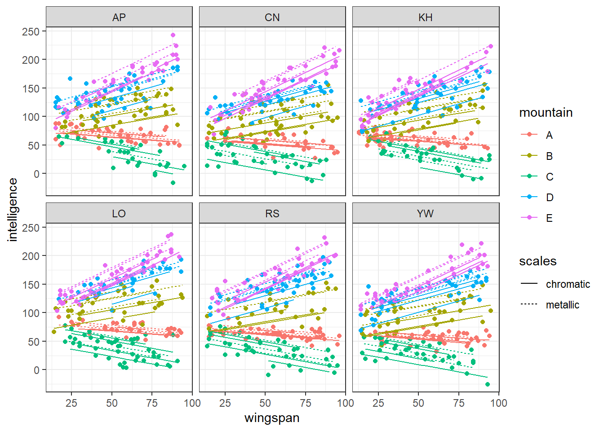
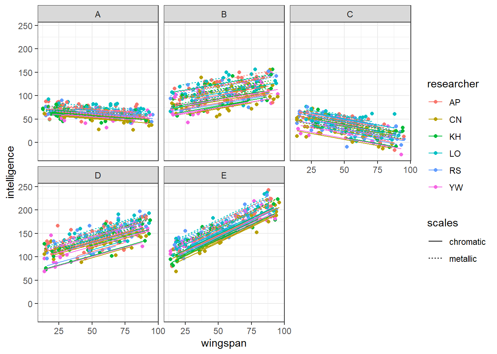

# load the required packages for fitting & visualising
library(tidyverse)
library(lme4)
library(broom.mixed)
library(performance)
library(MASS)12 Simulating hierarchical data
12.1 Libraries and functions
Click to expand
Key packages include several that we’ve already encountered, in addition to the new MASS package.
These bonus materials contain the code that was used for simulating the dragons dataset, with explanations provided.
Please note that there are many approaches to simulating data, and you are likely to find many alternative methods and tutorials elsewhere if this one does not suit you!
The code below explains how to simulate a dataset containing:
- categorical and continuous fixed predictors
- random intercepts & random slopes
- nested & crossed random effects
- specific variance-covariance structures
12.2 Imagine: dragons
We’re going to simulate a dataset with the following structure. Random effects are shown in purple, and fixed effects in orange.

dragons datasetThere are three levels in this dataset, i.e., we have nested random effects:
- Individual
dragonsat level 1 - Dragons grouped within
caveat level 2 - Caves grouped within
mountainat level 3
There is also a (partially) crossed random effect of researcher that sits outside the hierarchy structure. This is varying between individual dragons within caves, i.e., at level 1; each dragon is observed by just one of the possible researchers.
There are two fixed effects:
wingspan, which varies with each individual dragon at level 1scalescolour, which varies between caves at level 2 (i.e., all dragons in a cave are the same colour)
Other possible random slopes
Under this experimental design, there are a lot of possible random slopes, but we’re not going to simulate all of them and they’re not shown on the diagram above.
It would be possible, for instance, to have random slopes of wingspan|cave, since the fixed effect of wingspan varies down at level 1. This is biologically plausible - if each cave represents a dragon family, we might expect steeper or shallower relationships of intelligence ~ wingspan between those families. It’s reasonably simple to adapt the code below to simulate this if you think it’s worthwhile.
It would also be possible to fit random slopes for scales|researcher and wingspan|researcher, but neither of these are biologically very plausible. We don’t really expect the intelligence ~ wingspan + scales relationship to vary between researchers. We’ll just simulate random intercepts here, which you can think of as baseline differences in the way that the researchers assess intelligence.
We could even be simulating random effects of wingspan:scales|mountain and wingspan:scales|researcher - but these are probably a step too far.
12.2.1 Global parameters
We’ll start by using the set.seed function. By using this, we get a reproducible result every time we run the code.
In other words, if you keep all the parameters and numbers the same and run this script over and over, you’ll get the same dataset, so long as you keep the same seed.
set.seed(20)Then, we set the number of clusters and individuals, to give us the hierarchical structure and overall sample size.
nr <- 6 # number of researchers (crossed random effect)
nk <- 5 # number of mountain ranges (level 3)
nj <- 7 # number of caves per mountain range (level 2)
ni <- 30 # number of dragons per cave (level 1)The total sample size, i.e., the total number of individual dragons, will be equal to ni*nj*nk.
12.2.2 Fixed effects
Next comes the fixed effects. We need a coefficient for each predictor, plus a b0 global intercept.
To keep things simple, we’re going to make wingspan and scales additive, rather than including an interaction. But, if you want an interaction, you can simulate this by setting up a third beta coefficient for it.
b0 <- 70 # global intercept
b1 <- 0.5 # global slope for wingspan (fixed)
b2 <- c(0, 12) # global slopes/offsets for scales (fixed)Since wingspan is continuous, and scales is categorical with two levels, our beta coefficients look slightly different for the two.
Lastly, we’re going to set a fixed standard deviation for individual dragons. We’ll use this later, when we simulate our response variable intelligence, to add dragon-by-dragon variation - in other words, to add realistic noise to the data.
sdi <- 1012.2.3 Random effects
Now comes a slightly trickier bit: setting up our random effects.
Remember that when we estimate a random effect in a mixed model, we’re actually estimating a normal distribution of the set of intercepts or slopes for that clustering variable.
A normal distribution is described by two parameters - the mean, and the standard deviation (or variance). Since the mean of the distribution is being captured in our fixed effects, the part we need to specify for random effects is that standard deviation.
We do this separately for each of the random effects.
# Level 3
tau0 <- 8 # 1|mountain
tau1 <- 0.8 # wingspan|mountain
tau2 <- 8 # scales|mountain
# Level 2
tau3 <- 9 # 1|cave
# Crossed
tau4 <- 10 # 1|researcherSome of our random effects will also have some correlations between them - namely, the three random effects for mountain.
When we have multiple random effects for a clustering variable, we will need the mvrnorm function from the MASS package to simulate them.
The first step in doing this is to set the correlations between the three random effects, and specify the variance-covariance matrix.
rho01 <- 0.8*tau0*tau1 # correlation between 1|mountain and wingspan|mountain
rho02 <- 0.4*tau0*tau2 # correlation between 1|mountain and scales|mountain
rho12 <- 0.6*tau1*tau2 # correlation between wingspan|mountain and scales|mountain
sigma <- matrix(c(tau0^2, rho01, rho02,
rho01, tau1^2, rho12,
rho02, rho12, tau2^2),
3, 3)Now, we can simulate from a multivariate normal distribution, using the matrix we just set up.
mountain_randomeffs <- mvrnorm(n = nk, mu = c(rep(0, times = 3)), Sigma = sigma)Our intercepts for cave and researcher can be estimated more simply, since there’s no variance-covariance matrix to worry about (i.e., there’s only one random effect for each of these clustering variables).
cave_randomeffs <- rnorm(n = nj*nk, mean = 0, sd = tau3)
researcher_randomeffs <- rnorm(n = nr, mean = 0, sd = tau4)12.2.4 Create predictor variables
The next thing to do is to generate the values for our predictor and clustering variables.
Random predictor variables
Here, we create unique IDs for each mountain range and each cave. (Importantly, these cave IDs do not repeat between mountain ranges - in other words, our dataset will be explicitly nested.)
mountain <- rep(LETTERS[1:nk],each = ni*nj)
cave <- as.factor(rep(1:(nj*nk), each = ni))We’ll also create unique IDs for each dragon. This variable will essentially just repeat the row numbers, since we have one dragon per row of the dataset, but it’s useful for completeness (or if we ever decided to mess with our dataset later on, such as pivoting it to wide format, or removing rows).
dragon <- 1:(nj*ni*nk)And finally, we create unique IDs for each researcher. We’re just going to vary this randomly at the level of individual dragons.
researcher <- sample(rep(c("AP", "RS", "LO", "CN", "YW", "KH"),
length.out = ni*nj*nk))Fixed predictor variables
For wingspan, we sample a continuous variable from a uniform distribution (you could choose a different distribution if you wanted). This varies at level 1, so we want a new wingspan value for each individual dragon.
wingspan <- round(runif(nj*ni*nk, 13, 96))For scales, we have two possible values, chromatic or metallic.
According to our design, scales varies at the level of cave, level 2. We code that like this:
scales <- rep(c(rep("chromatic", times = ni), rep("metallic", times = ni)),
length.out = ni*nj*nk)
Coding
scales at different levels
If you wanted scales to instead vary only between mountain ranges - i.e., each mountain range only contains one scale colour - you can code that by adjusting the times argument in the rep function:
scales_lvl3 <- rep(c(rep("chromatic", times = ni*nj),
rep("metallic", times = ni*nj)),
length.out = ni*nj*nk)Or, if you wanted scales to vary down at the individual level, you can drop the times argument entirely, using similar code to what was used to generate the researcher variable above:
scales_lvl1 <- sample(rep(c("chromatic", "metallic"), length.out = ni*nj*nk))Checking the structure
It’s useful here to pause and look at the variables you’ve created, all together, to check that the structure matches what you were expecting to see.
tibble(dragon, wingspan, scales, mountain, cave, researcher)# A tibble: 1,050 × 6
dragon wingspan scales mountain cave researcher
<int> <dbl> <chr> <chr> <fct> <chr>
1 1 29 chromatic A 1 LO
2 2 55 chromatic A 1 CN
3 3 80 chromatic A 1 YW
4 4 15 chromatic A 1 RS
5 5 74 chromatic A 1 AP
6 6 41 chromatic A 1 RS
7 7 26 chromatic A 1 KH
8 8 95 chromatic A 1 CN
9 9 24 chromatic A 1 AP
10 10 27 chromatic A 1 YW
# ℹ 1,040 more rowsSo far, so good.
12.2.5 Create response variable and collate dataframe
We’ll simulate our response variable intelligence in two separate steps.
First, we produce a set of theoretical average values for intelligence for the given values of our predictors that exist in our dataset, without any individual noise/error.
average_response <- b0 + b1*wingspan + model.matrix(~ 0 + scales) %*% b2 +
model.matrix(~ 0 + mountain + wingspan:mountain + scales:mountain) %*% as.vector(mountain_randomeffs) +
model.matrix(~ 0 + cave) %*% as.vector(cave_randomeffs) +
model.matrix(~ 0 + researcher) %*% as.vector(researcher_randomeffs)
The model.matrix method
We’re using the model.matrix function, and the %*% matrix multiplier operator, wherever we have a categorical variable. The function sets up a table of 1s and 0s, and our coefficients (or random deviations) are added only where there is a 1.
Matrix multiplication has its own set of rules, going well beyond mixed models or even the R language, and we won’t go into detail here. But you can run these lines of code in RStudio to get a closer look at what’s happening as we multiply these matrices together.
view(model.matrix(~ 0 + mountain + wingspan:mountain + scales:mountain))
view(as.vector(mountain_randomeffs))
view(model.matrix(~ 0 + mountain + wingspan:mountain + scales:mountain) %*% as.vector(mountain_randomeffs))The second step is to sample our our actual values of our intelligence variable.
For each value of intelligence, we sample from a normal distribution where the mean is the average_response that we generated just above, and where the standard deviation is the individual sdi that we set along with the other global parameters.
intelligence <- round(rnorm(nj*ni*nk, average_response, sdi))This gives us a set of values for intelligence that are based on the model we’ve specified, but include normally-distributed random errors, as we would expect to see in actual data.
Last but not least, let’s build the dataframe so we can look at the data.
dragons <- tibble(dragon, intelligence, wingspan, scales,
mountain, cave, researcher)12.2.6 Fit and visualise simulated model
Having simulated based on a model, it’s useful to check that the model does in fact do a decent job of capturing all the sources of variation we built it with.
lme_test <- lmer(intelligence ~ wingspan + scales +
(1 + wingspan + scales|mountain) +
(1|cave) +
(1|researcher),
data = dragons)Warning in checkConv(attr(opt, "derivs"), opt$par, ctrl = control$checkConv, :
Model failed to converge with max|grad| = 0.00371082 (tol = 0.002, component 1)This model formula mirrors exactly the formula we used to create average_response, so if everything has gone well, we should get back out the parameters we put in.
summary(lme_test)Linear mixed model fit by REML. t-tests use Satterthwaite's method [
lmerModLmerTest]
Formula:
intelligence ~ wingspan + scales + (1 + wingspan + scales | mountain) +
(1 | cave) + (1 | researcher)
Data: dragons
REML criterion at convergence: 7915.4
Scaled residuals:
Min 1Q Median 3Q Max
-3.6091 -0.6781 -0.0016 0.6512 3.3544
Random effects:
Groups Name Variance Std.Dev. Corr
cave (Intercept) 95.0826 9.7510
researcher (Intercept) 41.9570 6.4774
mountain (Intercept) 82.3890 9.0768
wingspan 0.5689 0.7543 0.73
scalesmetallic 74.9855 8.6594 0.69 1.00
Residual 93.4913 9.6691
Number of obs: 1050, groups: cave, 35; researcher, 6; mountain, 5
Fixed effects:
Estimate Std. Error df t value Pr(>|t|)
(Intercept) 70.4551 5.4260 6.3134 12.985 8.65e-06 ***
wingspan 0.3796 0.3376 3.9941 1.125 0.3238
scalesmetallic 16.2370 5.1378 4.7225 3.160 0.0271 *
---
Signif. codes: 0 '***' 0.001 '**' 0.01 '*' 0.05 '.' 0.1 ' ' 1
Correlation of Fixed Effects:
(Intr) wngspn
wingspan 0.538
scalesmtllc 0.190 0.752
optimizer (nloptwrap) convergence code: 0 (OK)
Model failed to converge with max|grad| = 0.00371082 (tol = 0.002, component 1)# extract values for fixed effects
fixef(lme_test) (Intercept) wingspan scalesmetallic
70.4551141 0.3796023 16.2370446 # extract values for random effects
ranef(lme_test)$cave
(Intercept)
1 0.5593680
2 1.8027555
3 1.5570649
4 -4.8934710
5 8.4916245
6 -1.6639623
7 2.6979231
8 16.6340092
9 3.2337177
10 6.0797569
11 -11.6061454
12 4.6314090
13 -13.6247454
14 -10.6554106
15 -7.9644316
16 -5.4236484
17 14.0456340
18 10.4002966
19 9.1821409
20 -12.3287784
21 -18.3445087
22 0.1489425
23 14.1946474
24 5.8127781
25 6.9357773
26 -2.1854496
27 -14.6533699
28 8.0774363
29 -3.7075641
30 -15.0386221
31 1.1639208
32 -2.1632850
33 9.2598154
34 0.7652433
35 -1.4208688
$researcher
(Intercept)
AP 4.950110
CN -7.794784
KH -3.156414
LO 8.844382
RS 2.428189
YW -5.271482
$mountain
(Intercept) wingspan scalesmetallic
A -1.561117 -0.5952300 -7.093171
B -1.679598 0.1140412 1.505426
C -11.871687 -0.8950826 -9.962033
D 10.725514 0.4099539 4.171622
E 4.386888 0.9663175 11.378156
with conditional variances for "cave" "researcher" "mountain" This looks right. The fixed effects are more or less correct, and we have the right number of random coefficients for each clustering variable.
We did get a singular fit error when fitting the model. Usually this is an issue of power; either the effect sizes are very small, or there aren’t enough data points. You might want to alter the global parameters to deal with this.
Check assumptions
Based on how we simulated the dataset, a linear mixed model should be perfectly appropriate - but it’s worth checking that nothing went wrong.
check_model(lme_test,
check = c("linearity", "homogeneity", "qq", "outliers"))
check_model(lme_test,
check = c("reqq", "pp_check"))
Visualise data
This is perhaps the most important step. Do your simulated data actually look the way you expect?
In this first plot, we’ll look at the dataset in a single plot, with separate lines of best for each cave.
ggplot(augment(lme_test), aes(y = intelligence, x = wingspan,
colour = mountain, linetype = scales)) +
geom_point() +
geom_line(aes(y = .fitted, group = paste(mountain, cave)))
As intended, each cave is either chromatic or metallic. Within mountains, metallic dragons are on average cleverer than chromatic ones, but the slope of the intelligence ~ wingspan relationship is roughly similar. The slope of the relationship, however, does vary a fair bit between mountains.
In this second plot, we facet by researcher, to see what effects there are.
ggplot(augment(lme_test), aes(y = intelligence, x = wingspan,
colour = mountain, linetype = scales)) +
facet_wrap(~ researcher) +
geom_point() +
geom_line(aes(y = .fitted, group = paste(mountain, cave, researcher)))
Quite minimal. The overall effect of all predictors is very similar within each panel, but is very subtly shifted up or down along the y axis, which aligns with what we simulated.
Finally, let’s look at things by mountain, with individual lines of best fit for each cave.
ggplot(augment(lme_test), aes(y = intelligence, x = wingspan,
colour = researcher, linetype = scales)) +
facet_wrap(~ mountain) +
geom_point() +
geom_line(aes(y = .fitted, group = paste(cave, researcher)))
Here, we’re able to see the scales|mountain random effect a bit more clearly. In some mountain ranges, all our caves are bunched quite closely together, while in others, it’s clear that the metallic caves are on average full of more intelligent dragons, though the slopes are all parallel.
This all fits nicely with what we simulated. But, if we decided that some of the effects should be stronger or weaker, we could re-set some of our parameters, and re-simulate without needing to do very much extra work.
12.3 Using simulation for power analysis
A useful application for simulation of this type in mixed effects modelling is to perform power analysis.
One way you might wish to implement this is via the package simr, which is designed to perform power analysis by simulation for mixed effects models fitted using lme4.
This package can be used to investigate power a posteriori, i.e., once you already have a dataset and want to report on the power of your model. Perhaps more helpfully, you can also couple it with the simulation technique taught above to perform a power analysis a priori, i.e., to determine what sample size you might need for a prospective study.
The following links provide some information on how to do this:
This worked example shows a step-by-step process of running a power analysis in simr, as well as a slightly different way to simulate a dataset using the package.
This methods paper gives another, shorter tutorial.
12.4 Summary
Simulating hierarchical datasets requires several distinct steps, and importantly, you need to know the structure of your dataset and experimental design very clearly before you can do so. Making even small changes to the code could result in a predictor varying at a different level of the hierarchy to what you initially intended.
When simulating random effects in particular, you need to consider the relationship between those effects, by specifying a variance-covariance matrix. For more information on variance-covariance matrices, see the other bonus materials in this course.
Key Points
- Consider the experimental design carefully to ensure you simulate the right number of fixed and random effects
- Set global parameters and fixed beta coefficients first
- When simulating values of your clustering variables, use explicit nesting
- Random effects can be simulated using
rnorm, ormvrnormwhen there are multiple random effects for a single clustering variable - Matrix multiplication can be used to simulate categorical variables, including random effects
- Use a two-step procedure for simulating your response variable